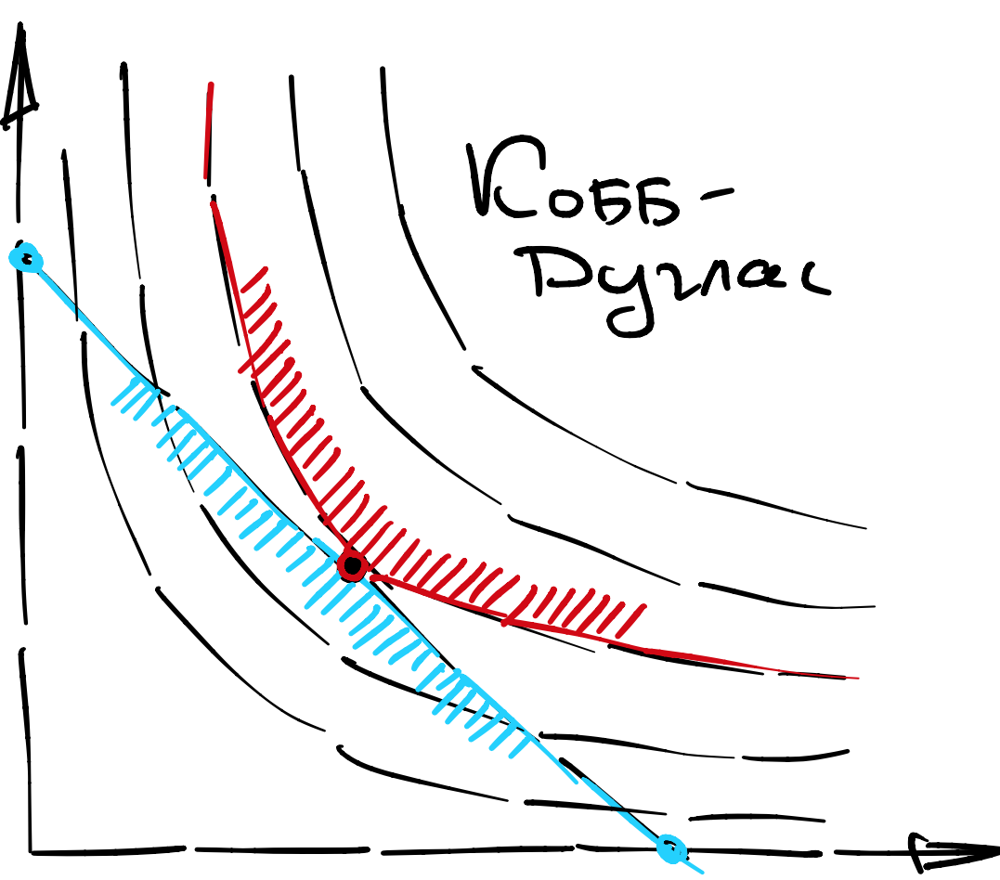
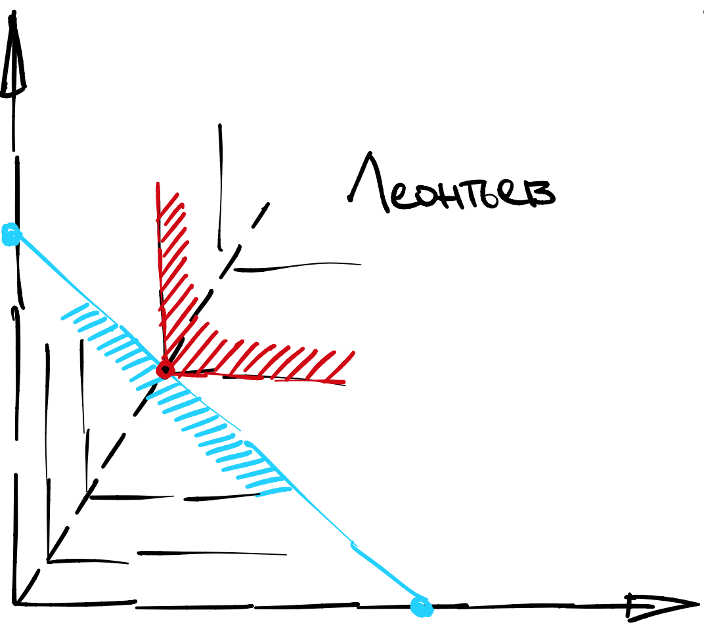

Вторая лекция, часть 2#
Полезность Кобба-Дугласа#
В теории производства в экономике функция Кобба-Дугласа связывает объем \(Q\) производства с объемами труда \(L\) и капитала \(K\):
Коэффициент \(\alpha = 0.73\) был откалиброван на производственном секторе США в 1920 году. Считалось, что (маржинальный) вклад труда и капитала в производство примерно 1:3, мы вернемся к этому утверждению чуть позже.
Аналитические свойства этой функции оказались настолько удобными, что она проникла также в теорию роста (модель Солоу) и теорию потребителя (материал наших лекции) в виде соответствующей функции полезности:
Note
Полезностью Кобба-Дугласа называется:
где \(x, y\) - это некоторые два товара.
Альтернативные формы#
Вспомним, что монотонные преобразования полезности не меняют поведение потребителя. Тогда можно применить логарифм и получить:
Заметим, что эта функция вогнута! Достаточно посмотреть на Гессиан.
Лагранжиан#
Выпишем Лагранжиан:
Заметим, что я выставляю знак минус так, чтобы у множителя Лагранжа была интерпретация теневой цены выхода за бюджетное ограничение. Это нам пригодится в следующей лекции, а сейчас просто постарайтесь запомнить.
Условия Первого Порядка#
Бездумно выпишем три уравнения:
\(\mathcal{L}'_x = \alpha/ x - \lambda p = 0\)
\(\mathcal{L}'_y = (1-\alpha)/y - \lambda q = 0\)
\(\mathcal{L}'_{\lambda} = I - p x - qy = 0\)
Легко видеть, что они эквивалентны
\(\alpha - \lambda p x= 0\)
\((1-\alpha) - \lambda q y= 0\)
\(px + qy - I = 0\)
Это уже система из трех (нелинейных) уравнений с тремя неизвестными. Скорее всего, она имеет единственное решение, но это еще не доказано.
Обозначим доли бюджета потраченные на \(x\) и \(y\) как \(s_x= px\) и \(s_y = qy\) соответственно, и умножим последнее уравнение на \(\lambda\). Тогда уравнения становятся еще проще:
\(\alpha = \lambda s_x\)
\((1-\alpha) = \lambda s_y\)
\(\lambda s_x + \lambda s_y = \lambda I\)
Эту систему можно уже решить в уме. Получается, что теневая цена равна \(\lambda = 1/I\), а доли бюджета потраченные на каждый товар постоянны:
откуда спрос уже совсем легко вывести.
Спросы#
Пусть полезность имеет следующий вид:
а цены равны \(p, q, r\) соответственно.
Attention
Спрос на каждый товар в Коббе-Дугласе описывается следующими уравнениями:
Обладая явной формой спросов можно легко прийти к следующему выводу:
Attention
Все товары в Коббе-Дугласе являются нормальными, а также попарно субститутами.
Действительно, удивительным свойством Кобба-Дугласа является то, что спросы не зависят от цен других товаров. То есть они где-то между субститутами и комплементами. Еще более удивительным является то, что доли бюджета потраченные на каждый товар постоянны.
Вопрос на понимание: если бы у вас были данные, скажем, от банка, где для каждого пользователя были бы указано сколько они потратили в квартал на рестораны, шопинг и коммунальные услуги, как бы вы откалибровали модель Кобба-Дугласа?
Косвенная полезность#
Нампомним, что косвенная полезность чувствительна к монотонным преобразованиям, поэтому тут важно какая именно спецификация была изначально дана в задаче. Для простоты давайте считать, что это спецификация в логарифмах.
Сосчитаем логарифм спроса на первый товар:
Аналогично считается логарифм спроса на другие товары. Теперь надо просто подставить их в полезность:
Attention
Косвенная полезность в Коббе-Дугласе (с точностью до преобразования) имеет вид
Константы \(C\) можно, как правило, не выписывать, так как они исчезнут при первой же попытке продифференцировать.
Геометрический анализ#
У функции Кобба-Дугласа очень характерные кривые безразличия - это такие гиперболы, расходящиеся от начала координат. Любопытно, что они загибаются по мере приближения к осям так, что невозможно получить касание с бюджетной линией в невнутренней точке. Достаточно посмотреть на градиент:
Иными словами, для любых строго положительных цен решение оптимизационной задачи с классическим бюджетным множеством - обязательно внутреннее, см. иллюстрацию.
{kind=link}
Вопрос 8: Нарисуйте кривую Энгеля и кривую безразличия
Вопрос 9: Убедитесь, что решение всегда находится в пересечении кривой Энгеля и кривой безразличия.
Вопрос 10: Убедитесь, что решение всегда находится в пересечении кривой Энгеля и бюджетной линии.
Вопрос 11: Убедитесь, что решение всегда находится в точке касания кривой безразличия и бюджетной линии.
Полезность Леонтьева#
Функция Леонтьева также активно использовалась в теории производства:
и также как и функция Кобба-Дугласа применялась в теории роста и закрепилась в теории потребителя. Ходят слухи, что эта модель калибровалась для экономики СССР. Для простоты, мы рассмотрим два товара:
Note
Полезность Леонтьева (для двух товаров):
Интерпретация полезности (производственной функции) такая, что для извлечения одной единицы полезности (конечного товара) необходимо ровно a и b единиц потребительских (промежуточных) товаров. Иногда такая полезность называется совершенными комплементами.
На самом деле для экономики СССР такая функция подходила гораздо больше, поскольку труд был фактически бесплатным. А львиная доля производства уходила на военные цели, которые очень даже хорошо описываются Леонтьевски:
1000 кирпичей + 100 досок + 250 гвоздей = Барак
3 тонны железа + 40 килограмм резины + 300 литров бензина = Танк
К сожалению, СССР перестал существовать раньше, чем такое моделирование принесло конкретные результаты. Возможно, причиной стал тот факт, что нахождение равновесия в такой экономике - это катастрофически сложная (NP-сложная) переборная задача, и компьютеры того времени просто не могли с ней справиться.
Геометрический анализ#
К сожалению, выписывание Лагранжиана тут не очень удобно, поскольку полезность негладкая. Гораздо удобнее визуализировать оптимум как точку, в которой линия уровня (угол) касается бюджетной линии, см, иллюстрацию.
{kind=link}
Немного пораздумав, мы приходим к выводу, что все такие точки касания лежат на кривой составленной из изломов кривых безразличия:
Она же совпадает с кривой Энгеля при любых заданных ценах.
Вопрос 12: Убедитесь, что решение всегда находится в пересечении кривой Энгеля и бюджетной линии.
Спросы#
Пусть полезность имеет следующий вид:
а цены равны \(p, q, r\) соответственно.
Attention
Спрос на каждый товар в Леонтьеве описывается следующими уравнениями:
Убедитесь подстановкой, что это решение действительно лежит в пересечении кривой Энгеля и бюджетной линии. Обладая явной формой спросов, можно легко прийти к следующему выводу:
Attention
Все товары в функции Леонтьева являются нормальными, а также попарно являются (строго) комплементами.
Форма ответа очень похожа на Кобба-Дугласа, но есть одно существенное отличие.
О каком отличии идет речь?
В Коббе-Дугласе доли постоянны, а здесь доли зависят от цен.
Вопрос 14: Убедитесь, что все товары в Леонтьевской полезности, действительно, являются строго комплементами.
Косвенная полезность#
Заметим, что в оптимуме полезности в обоих позициях аргумента одинаковые. То есть косвенная полезность равна одновременно левому и правому аргументу.
Attention
Косвенная полезность в Леонтьеве (с точностью до преобразования) имеет вид
Квазилинейная полезность#
Пожалуй, третья самая важная полезность имеет следующий вид:
Note
Квазилинейной полезностью называется:
где \(f\) - вогнутая функция.
Интерпретация последней координаты - это деньги на счету. То есть вам не обязательно тратить весь бюджет как раньше и остаток средств на счету конвертируется в утили по курсу 1:\(k\).
Лагранжиан#
Выпишем Лагранжиан:
Легко, правда?
Условия Первого Порядка#
Сейчас мы попробуем найти внутреннее решение.
\(\mathcal{L}'_x = f'_x - \lambda p = 0\)
\(\mathcal{L}'_y = k - \lambda = 0\)
\(\mathcal{L}'_{\lambda} = I - p x - y= 0\)
Легко видеть, что они эквивалентны
\(k = \lambda\)
\(x = (f')^{-1}(\lambda p)\)
\(px + y = I\)
Однако эта система не всегда имеет решение в \(\mathbb{R}^2_{+}\). Легко видеть, что спрос на товар \(x\) никак не зависит от бюджета, а стало быть, при достаточно маленьком бюджете спрос на товар \(y\) упрется в ноль.
Мы оказались в ситуации, о которой я предупреждал. Условия первого порядка указали на точку, которая может оказаться вне допустимой области. Если это так, это значит, что решение не внутреннее, а краевое. В таком случае мы заменяем условие первого порядка \(x = (f')^{-1}(\lambda p)\) на краевое условие \(y=0\) или эквивалентно \(x = I/p\).
Спросы#
В этой задаче есть два взаимоисключающих режима: внутреннее решение и краевое решение. Но вместо перебора случаев, можно записать ответ в компактной форме, если проявить немного смекалки.
Attention
Спрос на каждый товар в квазилинейной полезности описывается следующими уравнениями:
Убедимся, что следующее утверждение верно.
Attention
Все товары в квазилинейной полезности являются нормальными, a деньги (переменная \(y\)) являются универсальным комплементом.
Косвенная полезность#
Поскольку в задаче два режима, скорее всего ответ будет иметь форму максимума или минимума из двух выражений. Если бы ограничения не было, решение было бы всегда внутреннее, а полезность равна
Когда ограничение активно, оно мешает нам достигнуть этой полезности, и мы получаем вместо нее
Attention
Косвенная полезность в квазилинейной полезности (с точностью до преобразования) имеет вид
если \(I - p (f')^{-1}(k p) > 0\), и
в противном случае.
Линейная полезность#
Простая с виду, но очень неудобная на практике:
Note
Линейной полезностью называется:
интерпретируется как способность извлекать одну и туже полезность из разных источников. Конкретно вы можете получить одну единицу полезности либо из \(a\) единиц товара \(x\), либо из \(b\) единиц товара \(y\).
Это значит, что \(x, y\) обладают высокой взаимозаменяемостью либо вообще представляют собой один и тот же товар в пачках/таре разного размера. Такая полезность еще часто называется совершенными субститутами.
Геометрический анализ#
Решение в этой задаче не похоже на предыдущие, оно вообще всегда краевое. Почему так? Посмотрим внимательно на бюджетное ограничение:
оно показывает, что вы можете менять товары \(x, y\) по курсу \(\frac{1}{p}\) к \(\frac{1}{q}\). А в полезности вы можете менять товары по курсу \(a\):\(b\). За исключением редкого случая, когда эти курсы совпадают:
вам выгодно менять один товар на другой до упора. Осталось понять, каким будет краевое решение…
Интуитивно понятно, что вы будете тратить все на \(x\), когда его вес в полезности относительно большой, а его цена относительно маленькая. То есть когда \(ap\) относительно маленький.
Относительно чего? Конечно же, относительно \(bq\).
Спросы#
Attention
Спрос на каждый товар описывается следующими уравнениями:
если \(ap < bq\), то \(x^{\ast} = I/p, y^{\ast} = 0\)
если \(ap > bq\), то \(x^{\ast} = 0, y^{\ast} = I/q\)
Убедитесь, что следующее утверждение верно.
Attention
Все товары в линейной полезности нормальные и являются попарно субститутами.
Косвенная полезность#
Мы знаем, что решение либо в одном углу, либо в другом. Соответственно, ответ - это наибольшая из двух полезностей этих кандидатов, то есть
Пользуясь тем, что максимум коммутирует с монотонно возрастающими преобразованиями
и с монотонно убывающими преобразованиями в некотором смысле тоже
можно вывести следующее красивое свойство:
Attention
Косвенная полезность в линейной полезности (с точностью до преобразования) имеет вид
Оно еще пригодится нам в следующей лекции.
CES полезность#
Еще одна функция полезности, тесно связанная с теориями производства и роста:
Note
CES полезностью называется:
Основное замечательное свойство этой полезности в том, что у нее постоянны эластичности спроса. Что такое эластичность, мы с вами разберем на следующей лекции.
Лагранжиан#
Выпишем Лагранжиан:
Заметьте, что я сходу применил монотонное преобразование к полезности. Это хороший, гладкий Лагранжиан. Но является ли он вогнутым или квазивогнутым? Подумайте сами.
Условия Первого Порядка#
Я сразу запишу условия в слегка преобразованной форме:
\(\alpha \rho x^{\rho} = \lambda p x\)
\((1-\alpha) \rho y^{\rho} = \lambda q y\)
\(\lambda p x + \lambda q y = \lambda I\)
Используя несложную подстановку, получаем:
И еще раз подставляя…
И преобразуя еще раз, и используя сокращение \(\sigma = 1-\frac{\rho}{\rho-1}\):
Отсюда выражается множитель Лагранжа и, наконец, спросы:
Attention
Спрос на каждый товар описывается следующими уравнениями:
Тут много чего магически сократилось, потому что \(\sigma(1-\rho) = 1\).